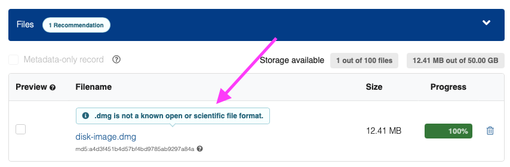
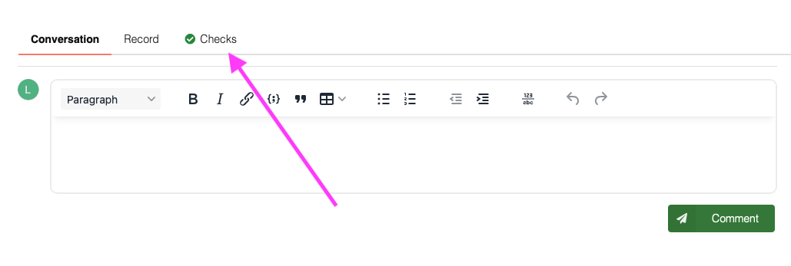
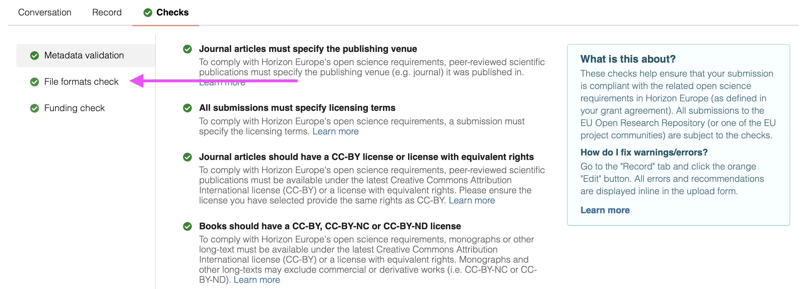
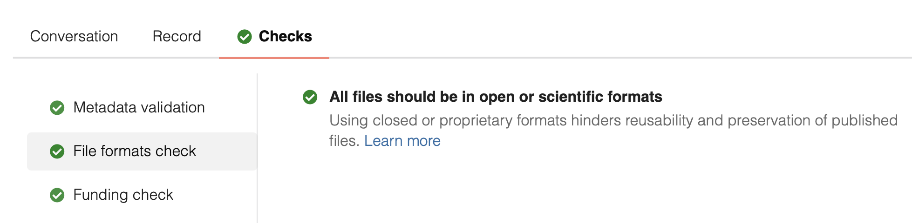

Files in submissions to the EU Open Research Repository are automatically checked against if the format used is an open or scientific file format. Open or scientific file formats are important because they ensure long-term accessibility, interoperability, and reuse of research outputs.
The guide covers the following:
1
During creating a new upload, click Save draft (make sure you have uploaded files). Any closed proprietary file format will be highlighted in the file upload:

1
During review of submissions, click the Checks-tab:

2
Next, click the File format checks in the side menu.

3
The tab will show detailed information about about which files failed the file format checks if any.

Using open or scientific file formats helps ensure that your research outputs remain accessible and reusable in the future. If your data is in a closed proprietary format, consider the following approaches to find an alternative:
When in doubt, include a README file to explain any limitations or choices made during the conversion process.
The list of open and/or scientific file formats used by Zenodo was originally sourced from F-UJI - Automated FAIR Data Assessment Tool as well as Library of Congress.
You can find the current list of formats on our GitHub repository.
Are we missing an open and/or scientific file format on the list? Please contact us on support so we can evaluate the format and add it to the list.